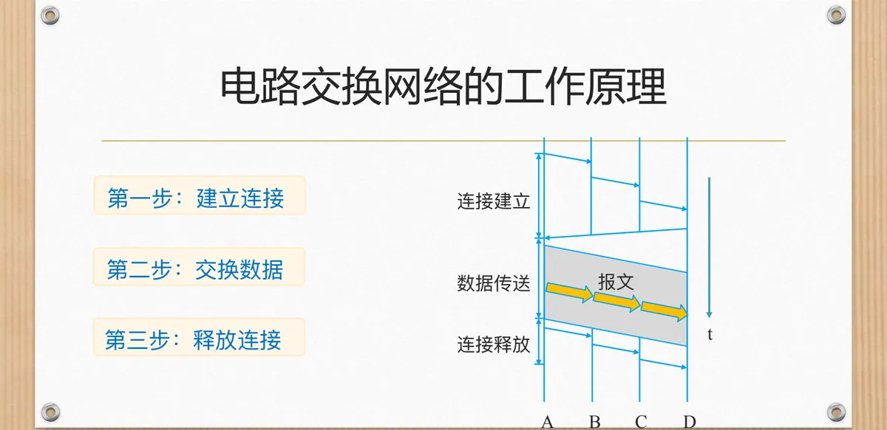
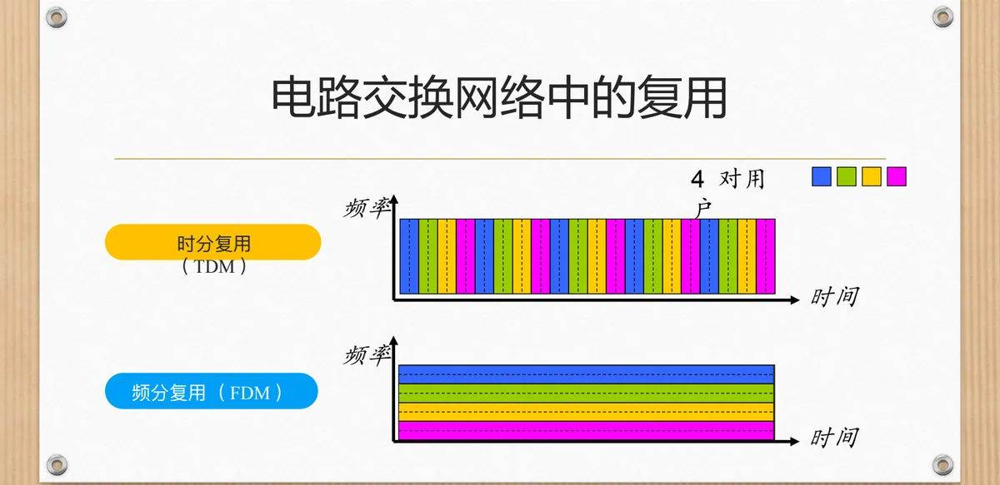
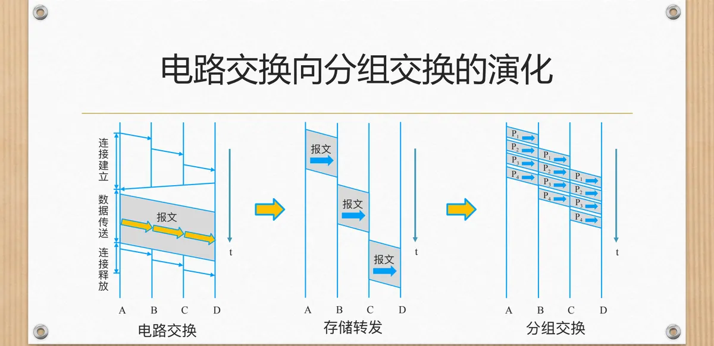
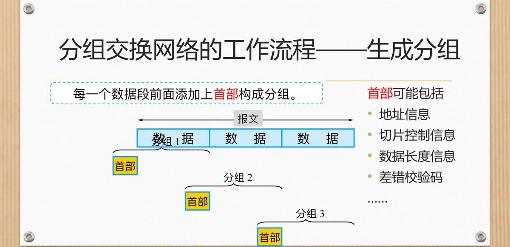
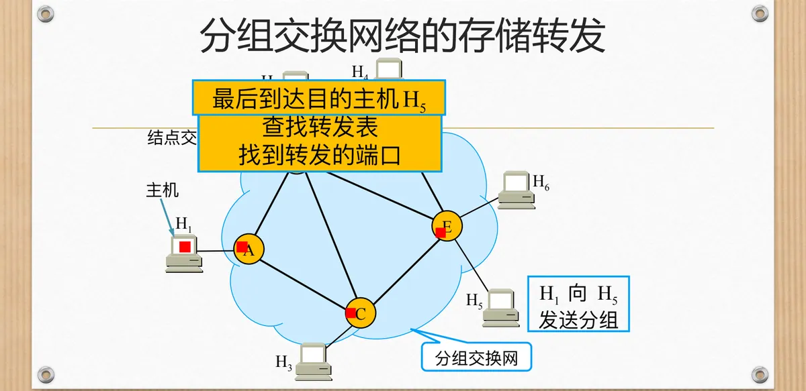
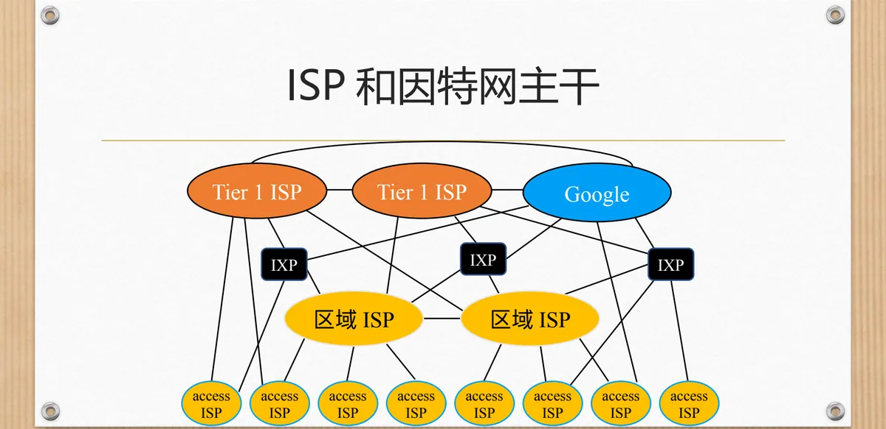

计算机通信与网络 · 第二版讲义 · 第 1 章 计算机网络概述
1.2 计算机网络的演化
电话网用电路交换，因特网用分组交换，这个差别几乎是整部计算机网络技术史的起点。本节沿「先有电路交换、再演化出分组交换」这条线索走：电路交换怎样建立连接、怎样靠复用把一条线路分给多对用户，为什么应付不了计算机之间突发、间歇的数据传送；分组交换把报文切成小块之后又付出了什么代价。最后延伸到网络与网络之间的互联，以及内容为什么要被送到离用户更近的地方。
1. 历史的回顾
在网络出现之前，计算机彼此孤立。最早的使用方式带点体力活：程序员扛着麻袋往返计算中心跑程序——把打孔卡片或纸带送到机房，排队等机器运行，再把结果取回来，人与机器之间的信息往来靠人搬运介质完成。
1953 年前后出现的收发器终端改变了这一点：终端通过线路连到主机，人可以在远端敲入数据、看到输出，但主机与主机之间仍然各自为政。再往前一步，就是早期电路交换网络——把电话网成熟的交换技术搬来传送数据：先接通一条端到端的通路，再在上面传数据，计算机通信就此继承了电话网的全部假设。
2. 电路交换网络的工作原理
电路交换（Circuit Switching）的思想是「先接通，再说话」，一次通信分三步：建立连接，在收发双方之间逐段接通一条物理通路；交换数据，报文沿这条通路从头传到尾；释放连接，把沿途占用的线路资源交还网络。

由此得到三条特性：数据交换前必须建立起从发端到收端的物理通路；在数据交换的全部时间内，用户始终占用端到端的固定传输信道；交换双方可实时进行数据交换，不会存在延迟。最后一条要打个折扣：通路上仍有传播时延和传输时延，「没有延迟」指的是没有存储转发带来的排队等待，通路一旦接通，数据就像水流过管道一样连续前行。
3. 电路交换网络中的复用
如果一对用户通话就占满整条线路，电路交换的成本将高得无法承受。解决办法是复用：让多对用户共享同一条链路的传输能力，4 对用户共用一条链路就是常见的例子。
- 频分复用 FDM（Frequency Division Multiplexing）：把链路可用的频带划分成若干互不重叠的频段，每对用户固定占用一段，可以同时发送；
- 时分复用 TDM（Time Division Multiplexing）：把时间划分成周期性的帧，每帧再分成若干时隙，每对用户固定占用其中一个时隙，轮流发送。

复用把一条昂贵的线路「批发」给多对用户，摊薄了成本，同时定下规矩——用户拿到的是固定份额，用与不用，那份资源都留在那里。
4. 电路交换的传输时间：一个 TDM 电路算例
一个具体场景：把 640,000 比特长的文件从主机 A 传送到主机 B，所有链路速率都是 1.536 Mbps，每条链路使用有 24 个时隙的 TDM，建立端到端的电路需要 500 毫秒。
1.536 Mbps 被 24 个时隙平分，每个时隙 1.536 Mbps ÷ 24 = 64 kbps，这就是这对用户占到的固定份额；传送 640,000 比特需要 640,000 比特 ÷ 64 kbps = 10 秒，加上 0.5 秒的电路建立时间，共约 10.5 秒。
建立时间只有半秒，却发生在数据传送之前、与文件大小无关，数据量越小越划不来；那 64 kbps 是事先分配的份额，这 10 秒里即使 A 只发了一半数据，空出的时隙也不会分给别人。
5. 电路交换网络存在的问题
把电话网的思路用在计算机数据上，两个矛盾很快暴露出来。
第一是突发性与收费方式不匹配。计算机之间的数据交换往往具有突发性和间歇性：敲一下回车，网络忙一阵，随后长时间空闲；而电路交换按用户占用线路的时间收费，空闲时线路不能给别人用，用户却要付钱，利用率很低。
第二是不够灵活：只要通路中的任何一点出了故障，就必须重新建立新的连接，这对紧急和重要的通信很不利。
6. 从电路交换到分组交换：动机与演化
针对数据的突发特征与电路交换的局限，美国军方提出，真正意义上的计算机网络必须满足五条要求：
- 不是为了打电话，而是用于计算机之间的数据传送；
- 能够连接不同类型的计算机；
- 所有的网络结点同等重要，不能有特别重要的结点；
- 必须有冗余路由；
- 网络结构尽可能简单，能够可靠传送数据。
这五条要求其实是一次重新设计：不要端到端通路，不要中心结点，也不要一条必须永远可用的固定路径。把它落成技术，就是分组交换（Packet Switching）——数据切成小块，每块自己找路，结点坏了就绕道走。

图 3 中两排箭头的推进方式不同：电路交换的报文整体沿通路前进；分组交换的 P1～P4 一段一段向前挪，每个结点把分组收全了再送出去，这就是存储转发。存储转发并非分组交换的发明——把一整份报文收全再转发，是更早的报文交换（Message Switching）的做法；分组交换真正的改动是把报文切小，等待随之从一整份报文缩短到一个分组。
7. 分组交换网络的工作流程
分组交换的特性可以先用四句话概括：将要发送的报文分解成若干个小部分，称为分组；每个交换结点采用存储转发技术；每个分组可能传送的路径不同；结点之间存在冗余路由。
（1）报文切片
在发送端，先把较长的报文划分成较短的、固定长度的数据段。数据块越小，中间结点「收全再转发」的等待越短，多个分组也更容易在同一条链路上像流水线一样首尾相接。
（2）加上首部，生成分组
每一个数据段前面都要添加上首部，构成分组。首部里可能包括地址信息、切片控制信息、数据长度信息、差错校验码等：数据段是用户要送的内容，首部是网络为把它送到位而必须携带的说明，也是额外开销的来源。

剩下三步发生在网络两端：以分组为数据传输单元，依次把各分组发送到接收端；接收端收到分组后剥去首部，还原出数据；最后把数据恢复成原来的报文。对用户来说，报文还是那份报文，中间的切片、加首部、逐站转发都由网络完成。
8. 分组在网络中的路径与存储转发
把视角挪到网络内部。图中主机 H1～H6 分布在边缘，结点交换机 A～E 构成中间的网状结构。H1 向 H5 发送分组时，分组先到达结点交换机 A。

A 并不「接通」一条通往 H5 的线路，它做三件事：把分组暂存下来；用首部里的目的地址查找转发表；找到应该使用的转发端口，把分组送出去。每个结点交换机都重复这套动作，分组就一站一站向前。同一幅图里，H2 向 H6 发送分组走的是另一条路径——没有预先定好的路，只有每个结点当下算出的下一跳，这正是分组交换与电路交换最直观的区别。
路径可变有好处：冗余路由让网络在结点或链路故障时仍能把数据绕送过去，网状拓扑降低了拥塞或故障的影响，也不存在「一出问题就全网瘫痪」的中心。代价落在接收端：同一报文的不同分组可能走不同路径、以不同顺序到达，把它们拼回原样是网络要负责的事。
9. 分组交换的特征与不足
把前面的内容收拢，分组交换的特征有几条：被传送的数据分成若干分组分别传送；数据传输前不必预先确定传输路径；网络中每个交换结点均为共享结点；数据传输采用存储／转发模式；各结点均具有选择合适路由的能力；网络断续动态地分配传输带宽，通信线路的利用率大大提高。
代价同样清楚。分组在各结点存储转发时因要排队，总会造成一定的时延，网络通信量过大时这种时延可能很大；每个分组都必须携带控制信息，这是纯粹的开销，数据切得越碎，首部占的比重越高；分组交换网的管理和控制也比较复杂——结点要维护转发表、处理拥塞、应对分组丢失与乱序。
10. 电路交换与分组交换的对比：三个案例
两种交换方式谁更好，要看具体的负载。三个案例分别给出了各自的适用面。
（1）案例 1：同样一条链路能支持多少用户
链路速率 1 Mbps，每个用户需要 100 kbps。电路交换必须为每个用户预留固定的 100 kbps，因此最多支持 1 Mbps ÷ 100 kbps = 10 个用户，第 11 个用户永远接不进来，哪怕前 10 个人都沉默着。
分组交换不预留，按需使用。设 1 个用户活跃的概率为 0.1，让 35 个用户共享这条链路：11 个及以上用户同时活动的概率只有 0.0004，即 10 个及 10 个以内用户同时活跃的概率为 0.9996。在相同条件下，分组交换能够比电路交换支持更多的用户。这种「用户数远多于链路容量、但用户不一定同时活跃」的做法通常称为统计复用。
（2）案例 2：只有一个用户时的速度
假设同一时刻仅有一个用户传输 1 M 的数据，电路建立时间可忽略不计：电路交换传完要 10 s，分组交换只要 1 s。当用户数较少时，分组交换能够获得比电路交换更好的性能——电路交换给用户的是一份预先分配好的固定带宽，链路上其余容量即使空着也不能借给他；分组交换没有这个约束，链路上没有别人，他就能把整条链路用满。
（3）案例 3：数据量大时的时延
把 L 长的分组推送出去到速率为 R bps 的链路上，要花费 L/R 秒。现在让数据从一台主机经三段链路、两个路由器送到另一台主机。
电路交换在发送数据之前已经建立好通路，数据沿通路连续向前流动，时延是 L/R；分组交换必须遵循存储转发的规矩——整个分组到达路由器之后才能向下一条链路传输，同一个分组经历三段链路，时延是 3L/R。可见数据量大时，分组交换的传输时延比电路交换大。
三个案例是同一件事的两面：分组交换靠共享换来更高的用户容量（案例 1、案例 2），代价是存储转发带来的时延与首部开销（案例 3）。所以，若要连续传送大量数据，且其传送时间远大于呼叫建立时间，采用预先分配传输带宽的电路交换较为合适；分组交换不需要预先分配传输带宽，在传送突发数据时可提高整个网络的信道利用率。第一版讲义 1.3 三种交换方式 用另一条线索讲了同一组概念。
| 对比项 | 电路交换 | 分组交换 |
|---|---|---|
| 是否建立连接 | 需要，先建立端到端的物理通路 | 不需要，传输前不必预先确定路径（虚电路除外） |
| 带宽分配 | 预先分配，全程独占固定传输信道 | 断续（动态）分配，按需使用 |
| 选路与转发 | 建立连接时定好，结点直通转发 | 每个分组独立选路，结点存储转发、查转发表 |
| 时延（三段链路） | 没有排队时延，时延为 L/R | 有排队时延，存储转发时延为 3L/R |
| 可靠性与拓扑 | 通路中任一点故障都要重建连接 | 有冗余路由，网状拓扑降低拥塞或故障的影响 |
| 开销与适用场景 | 按占用线路的时间收费；适合传送时间远大于呼叫建立时间的连续大批量数据 | 分组携带控制信息、有额外开销；适合突发数据，可提高信道利用率 |
值得想一想的是：「东数西算」这类跨地域算力调度、大模型训练带来的海量数据搬运，更接近「连续传送大量数据」还是「突发的数据流」？按上面的判据，前者的分量更重，而真实系统里的流量往往两种成分混在一起。
11. 分组交换的两种实现：虚电路网络与数据报网络
分组交换还可以再分。数据报网络（Datagram Network）完全按照分组交换网络的原理工作，是纯粹的分组交换：每个分组独立选路，同一报文的各个分组可能走不同的路径。而虚电路网络（Virtual Circuit Network）在分组交换网上模拟一些电路交换的特点，以取得电路交换的一部分优点：
- 虚电路需要建立连接，即建立虚电路链路；
- 在建立连接时决定链路的路由，在整个连接过程中保持不变；
- 在链路通过的每个节点，预留一定的资源；
- 每个分组携带一个标识（虚电路号），根据该标识知道该从哪个虚电路传输数据；
- 虚电路如果不使用了，需要释放相关的资源。
计算机网络的数据传输方法由此可以整理成一棵树：电路交换网络按资源划分方式分为 FDM 和 TDM；分组交换网络按是否建立连接分为数据报网络和虚电路网络。虚电路恰好站在两者中间：它像电路交换一样有连接、路由固定、预留资源，又像分组交换一样以分组为单位传输、链路可以被多对用户共享。
12. 网络之间的互联：主干 ISP、IXP 与区域网络
网络内部的交换方式解决了「怎么把数据从一台主机送到另一台主机」，接下来的问题是「网络与网络之间怎么连」。最直接的想法是把每个网络都与其他所有网络连起来，但采用直接连接每个网络的方法是极其愚笨的：N 个网络需要 O(N²) 条连接，成本和管理都无法承受。
可行的做法是构建主干网络连接各个网络：各地的接入网先连到主干 ISP，再由主干 ISP 把它们彼此连通。由于反垄断的需要，现实中存在多个主干网络（例如 ISP A、ISP B、ISP C），它们之间必须互联互通，于是出现了 NAP（Network Access Point，网络接入点）和 IXP（Internet eXchange Point，因特网交换点）这样的设施；主干 ISP 之间也可以建立对等链路，直接交换流量。此外，区域网络是主干网络的有效补充，它把一片区域内的接入网聚拢起来接入主干 ISP，减少了主干上的连接数量。

这也解释了内容分发为什么有文章可做：如果内容只放在某个角落的服务器上，其他所有用户都得穿过主干、跨过若干个 ISP 去取，距离和拥塞都会拖慢访问。
13. 从网络瓶颈到 CDN
互联网的早期带宽有限，限制了数据传输的速度；视频和音频等多媒体内容兴起后，带宽需求急剧增加，高峰时段用户经常无法流畅访问内容。这种困境可以归到四重瓶颈上。
带宽限制：多媒体内容把带宽需求推高。传输距离：内容位于遥远的源服务器时，数据要穿越多个网络节点，传输延迟随之增加，也更容易受到网络拥塞的影响。
用户访问量增长：传统集中式服务器架构难以满足大规模的用户请求，服务响应缓慢甚至瘫痪。网络拥堵：在节假日或重大事件期间，用户访问热门网站往往需要等待很长时间。
内容分发网络 CDN（Content Delivery Network）就是针对这四重瓶颈提出的方案，它的架构由四个角色组成：
- 源服务器：存储网站原始内容的中央服务器，内容更新时把新版本推送到边缘服务器；
- 边缘服务器：部署在全球各地的服务器节点，存储内容的副本，以便快速响应用户请求；
- 负载均衡器：在多个边缘服务器之间分配流量，避免单一服务器过载，优化内容分发效率；
- DNS 系统：解析用户请求的域名，把它映射到最近的边缘服务器，确保用户能快速访问所需内容。
一次典型的访问沿着四步走：用户通过浏览器请求访问内容；DNS 系统解析域名，把请求映射到最近的边缘服务器；负载均衡器根据负载情况选择合适的服务器，把内容分发到用户请求的节点；用户从最近的边缘服务器获取内容，实现快速访问。
关键技术有四项。缓存技术把内容存储在边缘服务器上，以便快速响应用户请求；负载均衡在多个边缘服务器之间均匀分配流量，提高服务可用性和稳定性；智能路由根据用户位置和网络状况选择最佳路径；网络优化通过优化网络路径和协议，减少延迟、提高传输效率。
本节小结
- 电路交换分三步：建立连接、交换数据、释放连接；接通之后，用户在全部时间内独占端到端的固定传输信道，实时性好，也没有存储转发带来的排队等待。
- FDM 与 TDM 把一条链路分成固定份额供多对用户共享：1.536 Mbps、24 个时隙的 TDM 链路给每个用户的只有 64 kbps，传送 640,000 比特要 10 秒，加 500 毫秒建立时间约为 10.5 秒。
- 电路交换按占用线路的时间收费，应付不了数据的突发性与间歇性，通路中任何一点故障都要重建连接；这正是「结点同等重要、必须有冗余路由、结构尽可能简单」等要求的由来。
- 分组交换把报文切成数据段、加上首部构成分组，结点存储转发、查转发表逐站选路；好处是动态分配带宽、线路利用率高、网状拓扑有冗余路由，代价是排队时延、首部开销与管理控制复杂。
- 三个案例给出判据：1 Mbps 链路配 100 kbps 用户时，电路交换最多支持 10 个用户，而 35 个用户按 0.1 的活跃概率共享链路时，10 个及以内用户同时活跃的概率为 0.9996；用户少时分组交换更快（1 s 对 10 s）；三段链路上存储转发使分组交换的时延为 3L/R，电路交换为 L/R。连续大批量数据用电路交换，突发数据用分组交换。
- 分组交换有虚电路与数据报两种实现；网络之间靠主干 ISP、IXP 与区域网络互联，而带宽、距离、访问量与拥堵这四重瓶颈，正是 CDN 用源服务器、边缘服务器、负载均衡器和 DNS 系统把内容推向用户近旁的缘由。